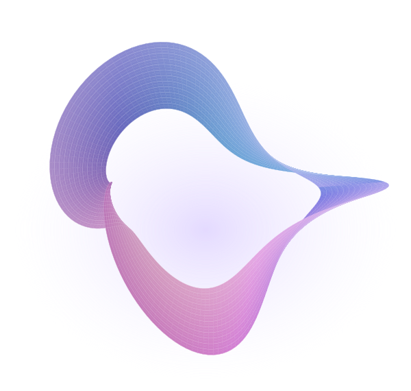
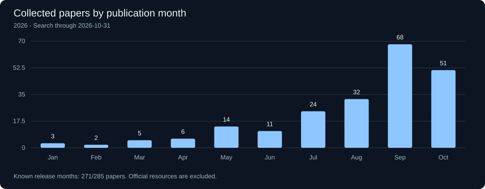

The survey
Research framing, synthesis, and findings.
arXiv link forthcomingA LIVING RESEARCH ATLAS
What actually evolves
around the model?
A survey of harness optimization and recursive self-improvement. We trace concrete edits to tools, context and control—and the evidence for what they change.
From reported edits to reusable insight. Research in progress.

RECURSION, BY DESIGN.THE SURVEY, MADE CONCRETE
What changed in the harness? What did that change accomplish? Under which conditions might it be useful again?
An agent’s harness is the prompts, tools, memory and execution logic around its model. Our survey connects how the improvement workflow works, whether the improvement procedure itself changes, and what reusable mechanisms emerge across tasks.
01 / WHAT WE LEARN
Three inferences from comparing concrete changes.
Select a lens to see what connects the domains.
These are cross-study comparisons, not a combined pipeline or demonstrated cross-domain transfer. Follow any cell to its evidence.
02 / THE EVOLUTION ATLAS
Four task domains. Concrete before-and-after changes.
Representative evidence and its limits, together.
Selected synthesis from the survey’s domain evidence. Each card compares reported reusable changes; it is not one shared implementation or one experiment.
03 / LIVING COLLECTION
Publication trends and actual collection updates.
Explore cumulative growth or monthly activity.

| Month | Papers | Cumulative |
|---|
Counts cover the survey collection, including related methods, surveys, and benchmarks.
Publication months use first arXiv submission where available, otherwise bibliographic publication dates.
Loading collection history…
Collection statistics could not be loaded. Please refresh this page.
04 / PROJECT
Read the evidence, reuse the data,
or suggest a paper or correction.
Research framing, synthesis, and findings.
arXiv link forthcomingCurated sources, classifications and publication-date provenance.
Download BibTeXSource code and supporting research material.
GitHub Currently private05 / CONTRIBUTORS
Human research direction.
AI-assisted development and organization.
The domain navigation could not be loaded. Please refresh this page.